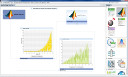
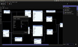
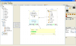
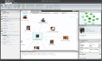
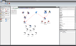
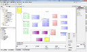

{kind=link}
{kind=link}
{kind=link}
{kind=link}
{kind=link}
{kind=link}
 Visual Library API javadoc
Visual Library API javadocThe NetBeans Visual Library provides a set of reusable, predefined, and extensible Java components, called "widgets". Each widget has, built into it, various features, such as actions, layouts, and borders. When you compose widgets together, you can quickly and easily visualize data to the user. Combined with other NetBeans APIs, the NetBeans Visual Library lets you create interactive UIs, with drag-and-drop features commonly found in designer software.
Java SE applications, using JavaFX, Swing, or both, as well as Java applets, can benefit from the widgets provided by the NetBeans Visual Library.
To provide context and help understand its purpose, here are screenshots of visualizations that have been created with the NetBeans Visual Library in real applications.
|  |  |  |
| NASA Polaris Slipstream | PraxisLIVE | Glotaran |
|  |  |  |
| Maltego | European Union Odyssey | Alipay |
Examples - Download and explore a large set of examples.
Visual Library Tutorial for NetBeans Platform Applications
Visual Library Tutorial for JavaFX Applications
Visual Library Tutorial for Java Swing Applications